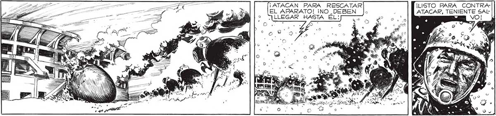
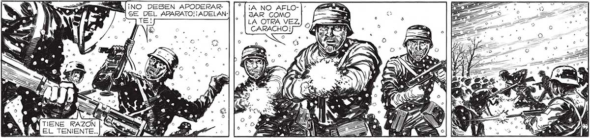

¡LISTO PARA CONTRA- a ATACAR, TENIENTE SAL> == VO! ¡ATACAN PARA RESCATAR EL APARATO! ¡NO_DEBEN ¿LLEGAR «HASTA. EL! a dá ¿ce A A ¡3 ES S MR SS E y EA INE AS ¡a S » e 9 0) o > > e 9 ¡DE NOSOTROS DEPENDE EL ÉXITO, MUCHACHOS!¡ A VER SI AHORA NO HAY RETIRADAS ESPONTANEAS!i MOSTRÉMOGLES LO QUE SOMOS CAPACES LOS CIVILES ! p a OS e o A AS : LA ORDEN ERA PARA MÍ. BAJE A LA CARRERA: YA MIS MILICIANOS FORMABAN EN LA CANCHA. LA ARTILLERÍA LO ESTAMPIDO CONTINUADO..ME PUSE DISPARABA CON TANTA RAPIDEZ... LA CABEZA DE LOGS MILICIANOG.. ¡NO DEBEN APODERAR- ¡A NO AFLO- | SE DEL APARATO! ¡ ADELAN- JAR COMO : : LA OTRA VEZ, CARACHO! FA TENE RAZON. Y EL TENIENTE.

